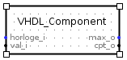
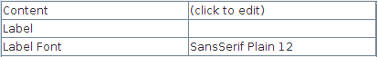
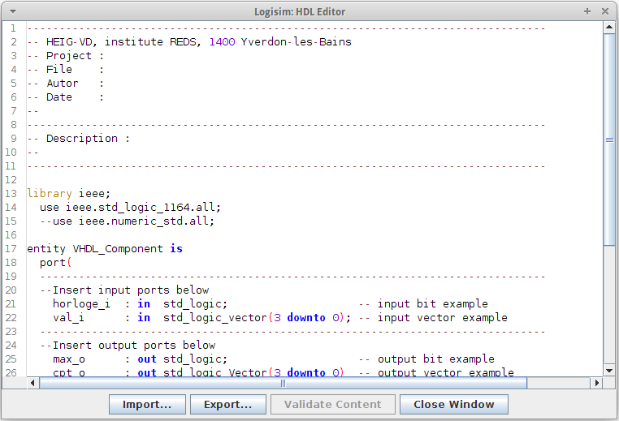

VHDL יֵשׁוּת
ישות VHDL היא רכיב שניתן לתאר באמצעות VHDL. זה מגיע עם עורך שניתן להשתמש בו כדי לערוך את הישות ואל אמת אותו, בתנאי שמותקן אצלך Questa Advanced Simulator במערכת שלך.
יצירת ישות VHDL
כדי ליצור ישות VHDL חדשה, פשוט פתח את ספריית HDL IP ב חלונית הסייר ולחץ על ישות VHDL רְכִיב. אם הספרייה אינה זמינה, תצטרך לטעון אותה: עבור לתפריט פרויקט, טען ספרייה ואז Build-in ספרייה ובחר HDL IP מהתפריט.

עריכת ישות VHDL

ישות VHDL חדשה מגיעה עם תבנית ברירת מחדל המכילה שתיים כניסות ושתי יציאות. ניתן לערוך את הישות על ידי לחיצה על תכונת content, כפי שמוצג להלן.

לאחר מכן ניתן להשתמש בעורך HDL המשולב כדי לשנות את הישות באמצעות VHDL ישירות. אתה יכול גם לייבא את התוכן של קובץ VHDL על ידי לחיצה על הלחצן יבא..., או ייצא קוד משלך על ידי לחיצה על הלחצן ייצא....

כאשר אתה עורך את הרכיב שלך, הלחצן אמת תוכן יעשה זאת להדליק. ניתן להשתמש בו כדי לבדוק אם הקוד שלך תקף, כל עוד מותקן ומוגדר לך Questa Advanced Simulator (ראה הגדרת הסימולטור המתקדם של Questa עבור עוד מידע). אם זה המקרה, לחץ על אמת כפתור ירכיב את קוד VHDL, יבדוק אם יש שגיאות ויציג את א חלון עם מידע נוסף אם נמצא כזה. אם הקוד שלך חוקי, הכפתור פשוט יושבת עד שתמשיך שינויים.
הערה: אם אין לך Questa Advanced Simulator, או אם הוא מושבת, לוגיסים בכל זאת תבצע כמה בדיקות, בעיקר בתיאור היציאות.
כשתסיים לערוך את הישות שלך, תוכל ללחוץ על הלחצן סגור לחצן חלון. הקוד יאומת על ידי Questa Advanced סימולטור אם הוא מותקן ומופעל, ו-Logisim יהיה ליצור מחדש באופן אוטומטי את הסמל של הישות שלך, להוסיף, להסיר או עדכון כל יציאה שאולי הוספת, הסרת או שינית ב- קוד. אם מתרחשת שגיאה במהלך תהליך האימות, חלון המכיל מידע נוסף יוצג, ותינתן לך שלוש אפשרויות:
- סגור בכל זאת ומחק את כל השינויים. זה מושג על ידי לחיצה על כן. נא לשים לב לשינויים שנעשה לישות שלך יאבד לצמיתות.
- חזור לעורך ותקן את השגיאות. זה מושג על ידי לחיצה על לא.
- צור גיבוי של קוד ה-VHDL שלך וסגור את העורך. זה הושג על ידי לחיצה על הלחצן צור גיבוי ולאחר מכן על ידי בחירת תיקיה ושם עבור קובץ הגיבוי שלך.
שימוש בישות VHDL
ישות VHDL משמשת כמו כל רכיב אחר. הבולט היחיד ההבדל הוא איך הישויות מטופלות בסימולציה. אנא ראה סימולטור VHDL לקבלת מידע מפורט הֶסבֵּר.